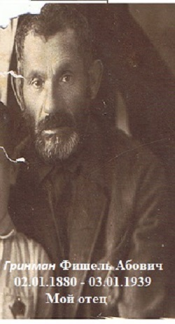

Этот предмет меня ввел в жизнь, я постепенно узнавал смысл жизни, что человечество создало за многие поколения, быт и стремления людей. За то, что директор дал нам эти интересные знания его в 1917 году, после революции забрали, и мы его больше не видели.
Мы жили очень бедно, нам было очень тяжело, часто голодали, но в субботу у нас всегда был (кулич) то есть булки.
Помню, как дедушка Аба меня посылал к богачу брать красное вино на пасху.
Помню, всегда накануне пасхи грузчики разносили в больших высоких кошёлках, на своих плечах, перевязанные веревками эти ковшике с мацой в каждый дом. Очень любил пасхальные вечера, когда читали агату, и я задавал 10 вопросов отцу.
 Отец мой Фишель очень тяжело работал у хозяев в темных погребах, куда не доходили лучи солнца, он делал щетки за копейки, часто голодал и нажил себе рак пищевода и умер очень молодым.
Я закрываю глаза и вижу заснеженную Чудновскую улицу, наши маленькие трамвайчики, маленькие лавочки, реку Каменку в которой купаются дети, сонных извозчиков и часовню на площади, Мы ходили к чану с чайниками и брали себе кипяток.
Я помню нашу печь, в которой бабушка варила и иногда пекла хлеб. Любил греться на печи зимой от холода.